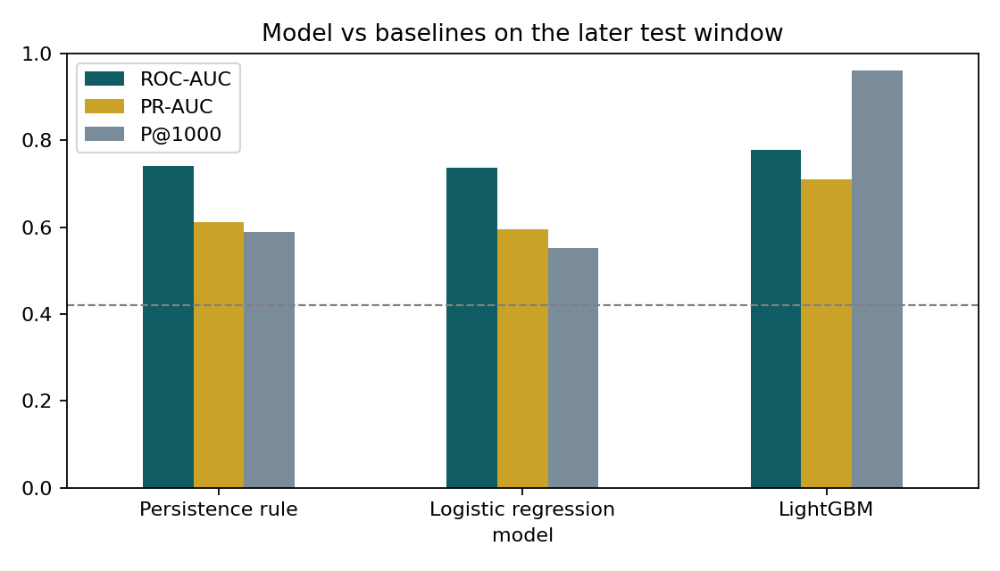
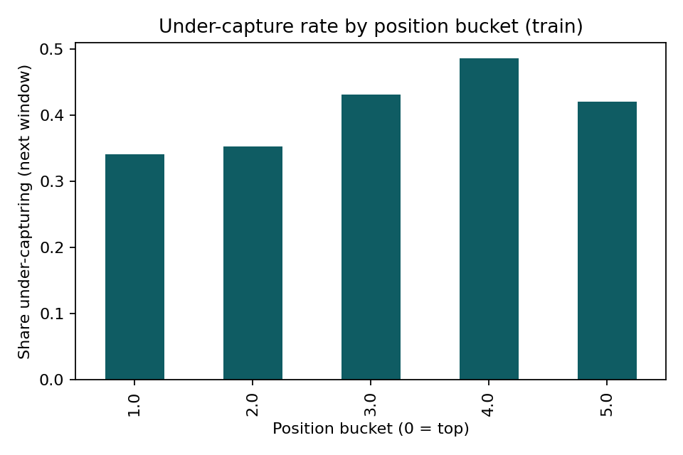
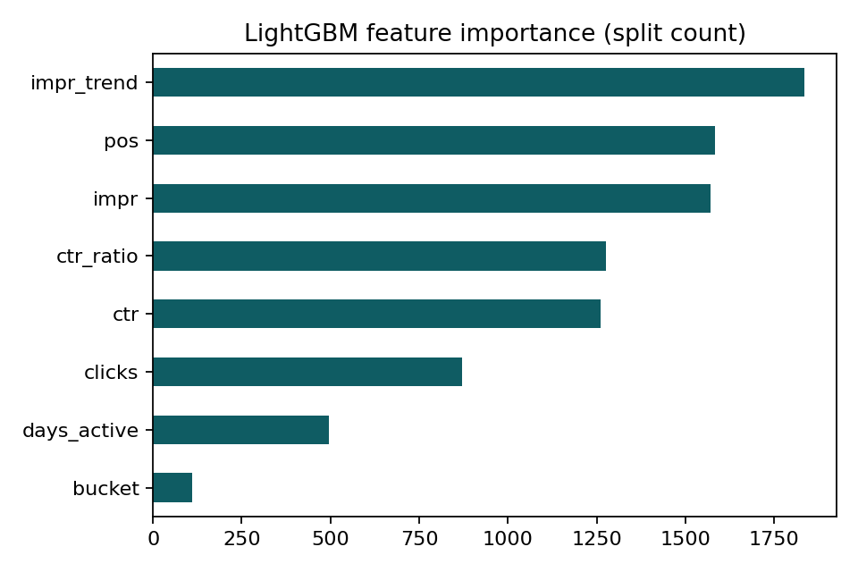

Which visible pages under-capture clicks next? A CTR opportunity-scoring study
Abstract.
Content teams can review only a limited number of pages each month, so we ask which already-visible pages are likely to under-capture clicks in the next 28 days. We use daily page-level Search Console metrics from the FlyRank ML Internship warehouse (April to June 2026, about 271,000 pages) and define under-capture as a CTR below 75% of the median for pages at a similar position. Features from a past 28-day window are used to predict this label in the following window, with a time-aware split (train cutoff 5 May 2026, test cutoff 2 June 2026). On the later test window, LightGBM reached ROC-AUC 0.778 and Precision@1000 of 0.961, against 0.742 and 0.589 for a persistence rule that ranks pages by past CTR ratio. The output is a ranked review list with reason codes; results are observed and directional, on one test window, and do not show cause or how Google ranks pages.
Introduction and problem statement
A content team can usually review a few dozen pages a month. Pages that already appear in visible positions but earn fewer clicks than similar pages are natural candidates for a metadata or search-intent review, because fixing them does not require winning a higher ranking first. The decision this work supports is: which pages should a reviewer open first?
The obvious shortcut is to assume last month's under-performers stay under-performers. This study tests whether a model that also uses volume, position and trend information ranks pages better than that shortcut. A wrong recommendation costs reviewer time, so the ranking is judged mostly by how precise the top of the list is.
Data
The study uses the FlyRank ML Internship warehouse release on Hugging Face, table fact_content_daily_performance, monthly partitions April to June 2026 (91 days). Columns used: report date, hashed content ID, Search Console impressions, clicks and average position. Rows are kept only where Search Console data is available and impressions are above zero, which leaves about 12.15 million page-day rows covering about 271,000 pages.
Inclusion and exclusions
Only about a third of rows in the release carry Search Console data, so the rest are excluded. Within each window a page must have at least 100 impressions and an average position of 20 or better in both the past and the future window; low-volume pages give unstable CTR. This leaves 57,302 pages for training and 54,566 for testing. A further 286 training pages were removed because their position bucket had a median CTR of zero, which makes the peer ratio undefined.
Methodology
Label definition
For a cutoff date T, features use [T−28, T) and the label uses [T, T+28). Pages are grouped into position buckets (1 to 1.5, 1.5 to 3, 3 to 5, 5 to 8, 8 to 12, 12 to 20). A page is under-capturing if its CTR in the label window is below 75% of the median CTR of pages in the same bucket and window. The positive rate is 42.3% in training and 42.1% in testing, so a random ranking would be right about 42% of the time.
Features
Impressions, clicks, CTR, impression-weighted average position, position bucket, days with data, CTR ratio versus peers, and impression trend (second half of the past window over the first half).
Baselines and model
The persistence rule ranks pages by their past CTR ratio, lowest first. The second baseline is logistic regression on scaled features (log impressions, log trend, CTR ratio capped at 10). The main model is LightGBM with 300 trees, learning rate 0.05 and seed 42.
Validation and leakage checks
The model is trained on cutoff 5 May 2026 (features 7 April to 4 May, label 5 May to 1 June) and tested on cutoff 2 June 2026 (features 5 May to 1 June, label 2 June to 29 June). Every feature window ends before its label window starts, and the test label window begins after training ends. Because 83.1% of test pages also appear in the training frame (in an earlier window), results are also reported on the 9,471 test pages not seen in training.
Results
| Model | ROC-AUC | PR-AUC | Precision@1000 | ROC-AUC, unseen pages |
|---|---|---|---|---|
| Persistence rule | 0.742 | 0.611 | 0.589 | 0.726 |
| Logistic regression | 0.737 | 0.596 | 0.552 | 0.735 |
| LightGBM | 0.778 | 0.710 | 0.961 | 0.764 |
Base rate on the test window: 42.1%. LightGBM beat the persistence rule on every measure, including on pages not seen in training. The ROC-AUC gain was 0.036 (bootstrap 95% interval 0.034 to 0.039, resampling test pages). Logistic regression did not improve on the persistence rule overall.

The largest difference is at the top of the ranking: among LightGBM's 1,000 highest-risk pages, 96.1% did under-capture, versus 58.9% for the persistence rule. These 1,000 pages are not typical. Their median impressions were 16,798 against 1,130 for all test pages, and 88% sit in the position 5 to 12 range. Precision@1000 therefore describes high-volume pages in mid-page positions, not all pages.


Limitations and honest framing
Findings are observed on one data release, one training window and one test window (June 2026). The bootstrap interval reflects sampling of pages only; it does not cover other months, and pages from the same client are not independent, so the true uncertainty is larger than the interval suggests. Signals are directional: they show association, not cause. The output is decision-support: it tells a reviewer where to look first.
The label compares each page with peers in the same window, so it depends on that window's peer median, which is not known in advance. CTR also depends on search-result features, brand queries and intent that this data does not capture. Some of the highest-priority pages show very low CTR at strong average positions; this may reflect real snippet problems, but it may also come from how position is averaged across many queries, so each flagged page needs a manual look before any change. Nothing here proves how Google ranks pages or that a change to a page would cause a change in clicks.
Ranked recommendations
Priority multiplies the model's risk score by an opportunity value (impressions times the shortfall in CTR versus peers), so pages with both high risk and high volume come first. Page IDs are hashed. The top 20 are in top_recommendations_hashed.csv. The most common reason codes on the test window were: declining impressions (20,029 pages), low CTR for position (19,823), growing impressions (18,355), high impressions (13,645), model-only signal (6,571) and high visibility (5,569). A page can carry several codes.
| Reason code | What it means | Suggested review |
|---|---|---|
LOW_CTR_FOR_POSITION + HIGH_VISIBILITY | CTR below peers at position 5 or better | Review title and description for click appeal, and check the query mix |
LOW_CTR_FOR_POSITION + DECLINING_IMPRESSIONS | Low CTR while demand or visibility falls | Review freshness and search-intent match |
LOW_CTR_FOR_POSITION + HIGH_IMPRESSIONS | Large volume at stake | Review first: each CTR point is worth the most clicks |
MODEL_ONLY_SIGNAL | Model flags risk without a rule-based reason | Monitor and re-score next month |
- Start the review queue from the ranked list, not from last month's low-CTR list; on this data the ranking was more precise at the top.
- Spend reviewer time on high-impression pages in mid-page positions first, where the model was most reliable.
- Re-run the scoring each month and compare against what happened, since this study covers one test window.
Reproducibility
Notebook: work/capstone.ipynb. Repository: github.com/Abdulhaqueburiro/Flyrank-AI-internship. Access to the dataset requires a Hugging Face read token; the notebook reads it from a secret, never from the code. Random seed: 42.
Acknowledgments and data credit
Built on the FlyRank ML Internship dataset, https://flyrank.ai. Thanks to the FlyRank team and the ML track mentors.